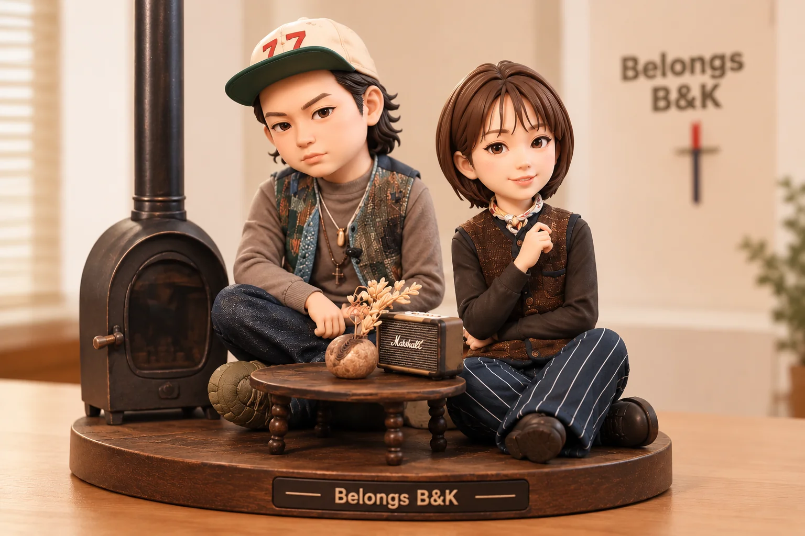
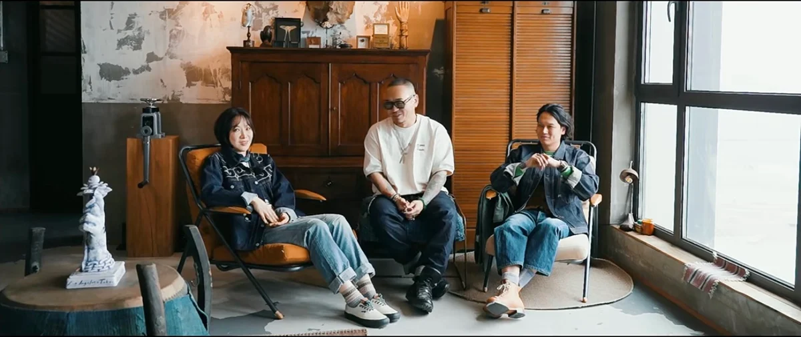
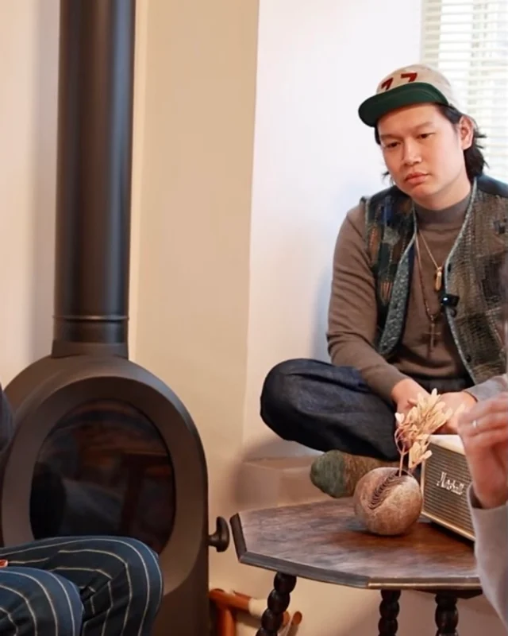
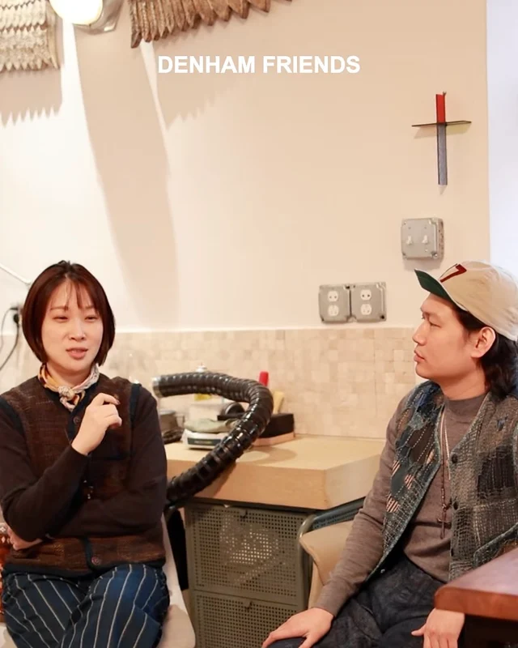
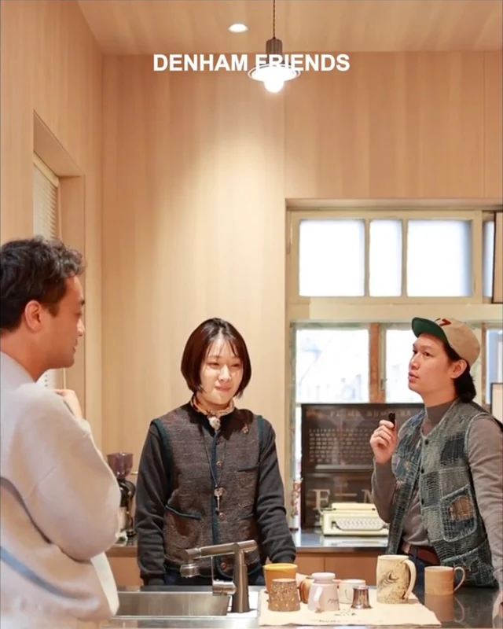

01 / CRAFT
手作与原创
一件作品从构思、设计、备料到试作，再到雕刻成形。羽翼系列坚持纯手工制作和不重复的雕刻，让每一根羽翼保有自己的气质。对 Belongs 而言，制银也是持续的艺术创作。

手作银饰 · 创作与影像
小红书号：BELONGS微信公众号：BELONGS OFFICIAL
BELONGS / 创作理念
在 Belongs 的官方画册里，银饰不仅是佩戴之物。手作、自然、自由与守护反复出现，成为作品与人之间的语言。以下内容依据官方图文归纳，并非逐字引述。
“以金银为纸布，以刻刀作画笔。”官方画册《启程》 · 2021

一件作品从构思、设计、备料到试作，再到雕刻成形。羽翼系列坚持纯手工制作和不重复的雕刻，让每一根羽翼保有自己的气质。对 Belongs 而言，制银也是持续的艺术创作。
从西部意象到东方唐草，从卷曲、舒展的线条到不规则的手工痕迹，自然与传统始终是重要的灵感。官方图文也谈到侘寂的影响：接纳不完美，呈现更真实的手工感。

羽翼、苍鹰、骏马、花朵与唐草反复出现在作品中，不只是装饰，也承载着自由、远行与希望。《光之翼》为羽翼赋予勇气与生命力，写下“有光，所以明亮；有翼，所以远翔”。

作品承载的不只是材质，更是陪伴与守护。《无言的守护》希望银饰像伙伴一样，在悲喜之间常伴身旁；《求真 求实》则把时间视作检验作品的尺度。真实与情感，也因此进入创作。

个人观察 · 非品牌官方原文
好的留白不是“什么都没有”，而是让每一个细节都有呼吸的空间。
我一直觉得，Belongs 的设计和传统日银有点不太一样。它有一种特别的柔性美：不是一味硬朗、粗犷，也不刻意追求精致，而是在刚与柔之间找到了舒服的平衡。
锤痕、肌理、氧化和不那么规整的边缘，保留着银本身的力量；克制的造型和适度留白，又让纹理、细节，以及佩戴之后人与饰品的关系，有了呼吸的空间。
它不靠第一眼的夸张取胜，却越看越耐看。粗犷里有精致，力量里有柔和；有手工的温度，也有设计的克制。不刻意追求“高级”，最后却自然呈现出一种安静的质感。
专题 / 从官方图文提炼
文字档案 / 2021—2026
依据官方公众号图文整理。摘要为编辑提炼，引号内为原文短句；2024—2026 年条目是作品主题线索，不作为独立官方长文。
没有找到相关内容。
影像记录 / DENHAM x BELONGS
合作上线与主理人探访

丹宁与银饰相遇，走进合作系列背后的创作现场。
前往小红书观看

